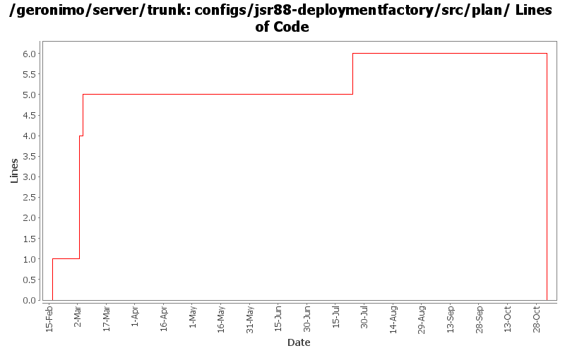

[root]/configs/jsr88-deploymentfactory/src/plan

| Author | Changes | Lines of Code | Lines per Change |
|---|---|---|---|
| Totals | 5 (100.0%) | 7 (100.0%) | 1.4 |
| jdillon | 1 (20.0%) | 4 (57.1%) | 4.0 |
| kevan | 1 (20.0%) | 1 (14.3%) | 1.0 |
| gdamour | 1 (20.0%) | 1 (14.3%) | 1.0 |
| djencks | 1 (20.0%) | 1 (14.3%) | 1.0 |
| prasad | 1 (20.0%) | 0 (0.0%) | 0.0 |
GERONIMO-3565. Configs distributed amongst framework/configs and plugins
0 lines of code changed in 1 file:
GERONIMO-2735 Merge from branches/2.0. Fix broken JSR88-Depoloyment. Make LocalAttributeManager a bit more lenient if a substitutionPrefix attribute is not specified
1 lines of code changed in 1 file:
GERONIMO-2735 property substitution file for jsr88, required jar for client-system
1 lines of code changed in 1 file:
Std props
dos2unix on some files with inconsistent newlines
4 lines of code changed in 1 file:
Second attempt to change the way the online/offline deployers and the JSR88
deployment driver work. The first attempt was breaking the TCK amd the
eclipse plugin.
Online deployer, i.e. deployer.jar, boots a Kernel to load its dependencies,
e.g. geronimo-deploy-tool, and registers the available ModuleConfigurers with
the DeploymentManager.
ModuleConfigurers to be registered are loaded by the persistent configuration
list jsr88-configurer-config.xml.
In the case of an offline deployment, the online deployer starts the
offline-deployer configuration within the same Kernel. In turn, the
offline-deployer configuration starts a list of configurations to register
the available module builders.
Add a log4j configuration for the online deployer.
DeploymentFactoryBootstrapper is the new JSR88 deployment driver. It boots a
kernel; starts the configuration list jsr88-configurer-config.xml; retrieves
the "actual" DeploymentFactory implementation from the kernel; and delegates
to this retrieved imoplementation.
The JSR88 JAR driver is now named jsr88-deploymentfactory.jar.
This fixes:
* GERONIMO-2794 - Improve online deployer to register ModuleConfigurers from the repository; and
* GERONIMO-2767 - Minimize side effects of the offline deployer
1 lines of code changed in 1 file: